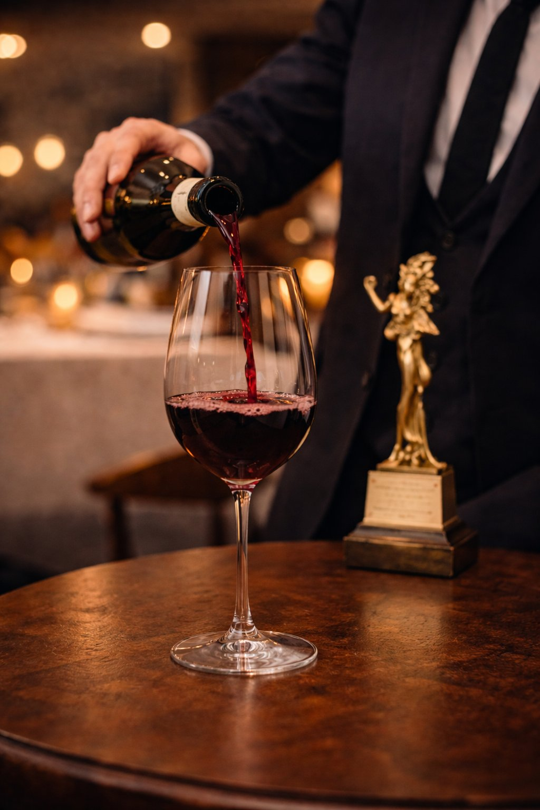

Palmarès 2025
Los ganadores de la temporada
Resultados de la gala de entrega de premios de la temporada 2025.

Gala de entrega de premios 2025 · Vermuts Rofes · Reus
Premios
Los dos galardones anuales que reconocen la excelencia culinaria y la cultura del vino en el Camp de Tarragona.
El máximo reconocimiento al mejor restaurante de la temporada. La puntuación final es la media acumulada de los 8 criterios valorados por todos los socios en cada visita.

Reconocimiento al mejor vino descubierto durante el recorrido. Cada socio puntúa globalmente los vinos de cada visita del 1 al 5.
Palmarès 2025
Resultados de la gala de entrega de premios de la temporada 2025.
Gala de entrega de premios 2025 · Vermuts Rofes · Reus
Temporada 2025
Los seis restaurantes que completaron el recorrido 2025.
Tarragona
Roda de Barà
Tarragona
Vilanova d'Escornalbou
Salou
Tarragona
Historial
| Gastronia 1 | En proceso de recuperación |
| Gastronia 2 | En proceso de recuperación |
| Bacus | En proceso de recuperación |
| Gastronia 1 | En proceso de recuperación |
| Gastronia 2 | En proceso de recuperación |
| Bacus | En proceso de recuperación |
| Gastronia 1 | En proceso de recuperación |
| Gastronia 2 | En proceso de recuperación |
| Bacus | En proceso de recuperación |